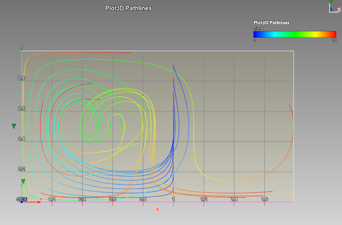
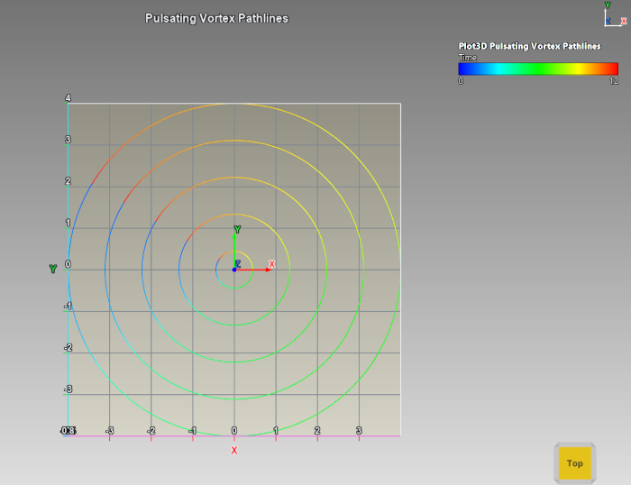
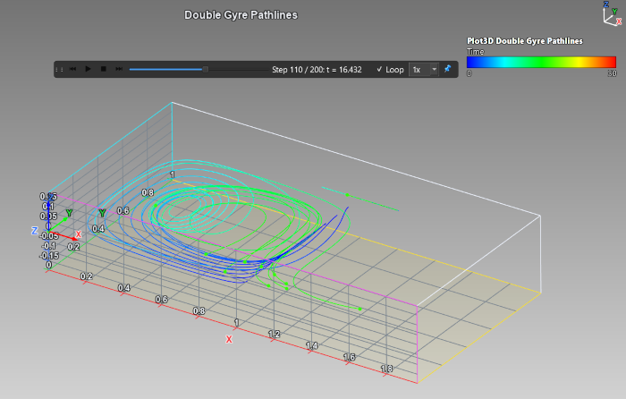
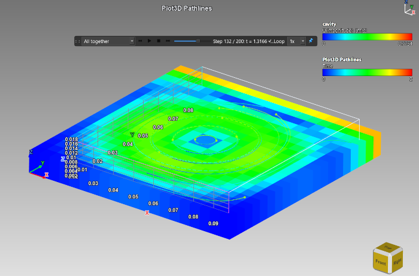

Lezione 25: Grafici e risultati riprodotti insieme
Introduzione
Le lezioni da 19 a 24 ti hanno presentato risultati di simulazione e grafici 3D separatamente. Vivono nella stessa scena e, quando entrambi cambiano nel tempo, un'unica barra di riproduzione può guidarli insieme. Questa lezione traccia particelle in un flusso dipendente dal tempo come linee di percorso, le anima e le riproduce in sincronia con un risultato.
Linee di percorso da una serie temporale CSV
Una linea di percorso è la traccia di una particella trasportata da un flusso che cambia nel tempo. Dai a ModelViewer il campo di velocità su una griglia regolare, con righe di tabella per ogni istante, ed esso rilascia particelle e integra i loro percorsi attraverso il campo variabile.
pathlines_double_gyre.csv: il doppio vortice di Shadden, due celle controrotanti la cui linea divisoria oscilla, campionato a 21 istanti.
Linee di percorso del doppio vortice, colorate secondo il tempopathlines_rising_vortex_3d.csv è una versione 3D con una colonna Z: una rotazione la cui velocità pulsa nel tempo più una velocità verticale oscillante, così le tracce salgono mentre girano. Se elimini una riga da una copia di una tabella, la riga di stato dice che non è una griglia completa e di quante righe ha bisogno.
Linee di percorso da una formula
Linee di percorso da formula (dipendenti dal tempo) non richiede file: u(x,y,z,t), v(x,y,z,t) e w(x,y,z,t) sono espressioni della posizione e del tempo; i punti di partenza si impostano con Intervallo Y / campioni e l'intervallo di tempo con Intervallo di T / passi. Preimpostazioni: Pulsating Vortex, Double Gyre, Travelling Wave e Oscillating Updraft.

La preimpostazione Pulsating Vortex: anelli le cui bande di colore si addensano dove la particella rallentaAnimare le linee di percorso

Linee di percorso a metà animazione, con i loro punti di testa e la linea temporaleUna barra di riproduzione per entrambi
La linea temporale riproduce l'elemento scelto nella casella alla sua sinistra. La casella elenca ogni risultato di simulazione a più passi (Simulation: nome) e il grafico delle linee di percorso animato (Pathlines: nome) e, quando entrambi possono essere riprodotti, Tutti insieme. Con un solo elemento riproducibile la casella è nascosta. Le legende di un risultato e di un grafico si impilano in una colonna, ciascuna intestata con il nome del suo proprietario.
sample-models/Simulation/openfoam_cavity/cavity.foam e scegli l'intensità della velocità (U, Intensità) nella scheda Risultati di simulazione.pathlines_openfoam_cavity.csv da sample-models/Plot3D e associa Tempo = t, X = x, Y = y, Z = z, U = u, V = v, W = w. Quel file contiene la velocità al centro delle celle dello stesso caso su un piano appena sopra la faccia superiore, quindi entrambi condividono coordinate e tempo reale. Crea il grafico e nascondi il suo box degli assi se ingombra la vista.
Il risultato della cavità e le sue linee di percorso riprodotti insieme, con la casella di riproduzione su Tutti insiemeFEM_box_modes.frd, i cui passi sono frequenze in hertz, non può condividere un asse temporale con le linee di percorso: Tutti insieme le riproduce allora per avanzamento invece che per tempo.